خلاقیت
و نوآوری
Creativity & Innovation — in the Age of AI
دکتر مهدی صادقیآیندهپژوهی · مدیریت بازاریابی · استراتژی
روی ابر نقاط کلیک کنید تا ایده شکل عوض کند · بکشید تا بچرخد
مشاور بازاریابی و فروش · قنادی
مشاور بازاریابی · تجهیزات آشپزخانه
مشاور بازاریابی و فروش · فولاد
FMCG · طراحی داخلی · مبلمان اداری
مشاور برندینگ · روغن کنجد
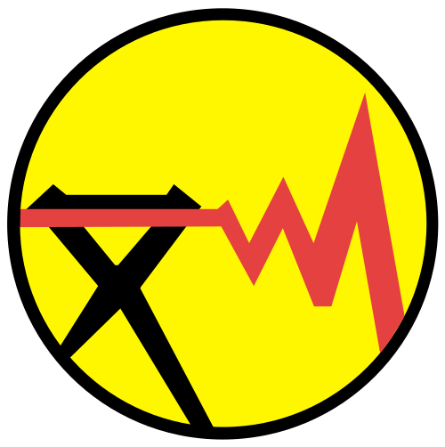
توانیرمشاور سیستم مدیریت یکپارچه (IMS)
بنیانگذار؛ کسبوکار در حال اجرا
همبنیانگذار؛ مرحله راهاندازی MVP
یک شکست ارزشمند؛ همان «شکست هوشمندانه» که بعداً دربارهاش حرف میزنیم.
ساخت شبکه حرفهای مشاوران آیندهنگاری در همه حوزههای مدیریت
میهای چیکسنتمیهایی: بهترین لحظهها وقتی رخ میدهند که چالش و مهارت هر دو بالا و همتراز باشند. خلاقیت در همین کانال اتفاق میافتد.
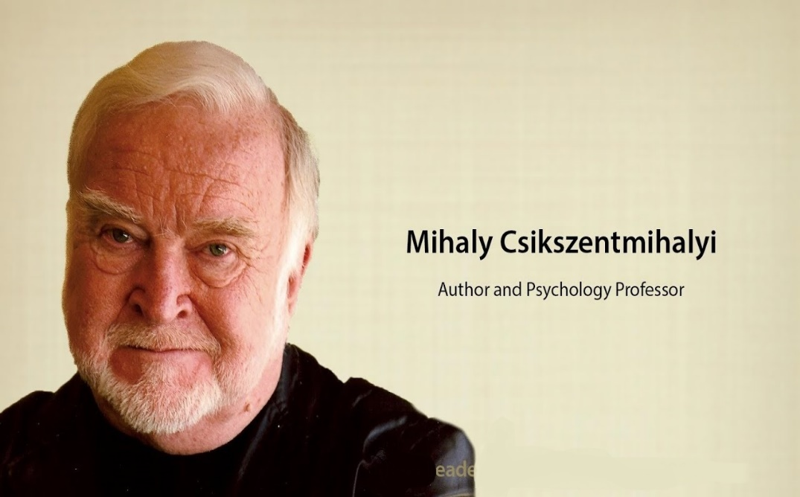
غرقگی با هر اعلان شکسته میشود. ۹۰ دقیقه برای ذهن خودمان.
این بیت، صورت فارسی مدل «چهار مرحله شایستگی» است. نقطه شروع یادگیری و خلاقیت، آگاهی از ندانستن است.
روی هر خانه کلیک کنید ←
«اسب خرد از گنبد گردون بجهاند» — دانایی آگاهانه
«بیدار کنیدش که بسی خفته نماند» — دانش ضمنی
«لنگان خرک خویش به منزل برساند» — نقطه شروع یادگیری
«در جهل مرکب ابدالدهر بماند» — خطرناکترین حالت
درباره قاعده حرف میزنیم، نه استثنا. یک مثال نقض، قاعده را باطل نمیکند.
در مدیریت پاسخ جهانشمول نداریم؛ هر نسخه به زمینه، زمان و بازیگران بستگی دارد.
هر سازمانی باید آماده باشد که تمام آنچه دارد را ترک کند.
«هیچ چیز بیفایدهتر از انجام کارآمدِ کاری نیست که اصلاً نباید انجام میشد.»
آیندههای بدیل، شکست غولها، عصر VUCA/BANI، نسلهای جدید و پرسش اصلی: هزینه بیاقدامی چیست؟
آینده یک نقطه نیست؛ طیفی از امکانهاست. مخروط را بچرخانید و روی لایهها کلیک کنید.
همه تصمیمات ما برای آینده است،
اما همه دانش و تجربه ما برای گذشته.
با دانش گذشته نمیتوان با محیط آینده روبهرو شد.
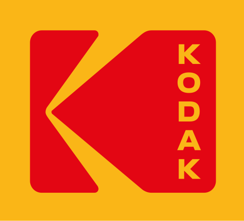
چرا کداک شکست خورد؟
مهندس خودِ کداک (استیو ساسون) ۱۹۷۵ اولین دوربین دیجیتال را ساخت؛ مدیریت آن را تهدید فیلم دید. ۲۰۱۲ ورشکستگی.
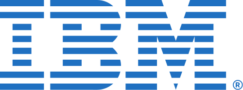
از شکست IBM چه میدانیم؟
دلبستگی به مینفریم و دستکم گرفتن PC. ۱۹۹۳ زیانی حدود ۸ میلیارد دلار؛ نجات با چرخش به خدمات.
وقتی جنرال موتورز در برابر ژاپنیها سر خم کرد
تکیه بر خودروی بزرگ و پرمصرف در برابر تولید ناب تویوتا. ۲۰۰۹ ورشکستگی و نجات دولتی.
نوکیا را که میشناسید؟
۲۰۰۷ نزدیک به نیمی از بازار گوشی هوشمند. غفلت از اکوسیستم نرمافزار؛ ۲۰۱۳ فروش بخش موبایل به مایکروسافت.
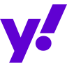
وقتی حتی یاهو هم شکست میخورد
فرصت خرید گوگل را از دست داد و پیشنهاد ۴۴.۶ میلیارد دلاری مایکروسافت را رد کرد؛ ۲۰۱۷ با حدود ۴.۵ میلیارد فروخته شد.
افزوده: درس کلاسیک
۲۰۰۰ خرید نتفلیکس به ۵۰ میلیون دلار را رد کرد. ۲۰۱۰ ورشکستگی.
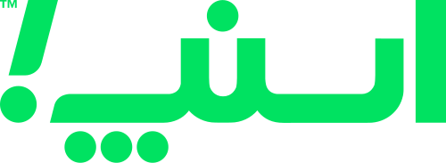
آژانسهای تاکسی تلفنی کجا رفتند؟
در کمتر از دو سال، مدل کسبوکار پلتفرمی بازار آژانسها را دگرگون کرد.
چند سوپرمارکت از بین رفتند؟
گسترش فروشگاههای زنجیرهای و اکنون کوئیککامرس؛ ادامه این روند چگونه است؟
سهم نانواییهای سنتی؟
نان صنعتیِ سوپرمارکتها چقدر از سهم نانواییهای سنتی کم کرده و خواهد کرد؟
آینده بانکداری چگونه است؟
نئوبانکها، پرداختهای بلادرنگ، دستیارهای مالی هوش مصنوعی؛ شعبه چه نقشی خواهد داشت؟
جوشکار انسانی به چه کار میآید؟
ربات ۲۴ ساعته و یکنواخت کار میکند. بحران منابع انسانی را حس کردهاید؟
چه مثالی دارید؟
وقتی تکنولوژی تولید، محصول یا بازار را دگرگون کرد، سازمان شما کجا بود؟
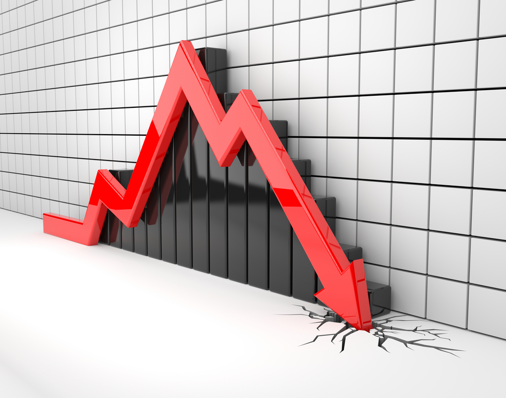
شرکتهایی که شکست خوردند احمق نبودند؛ اتفاقاً در کاری که میکردند بسیار خوب بودند. مشکل این بود که دنیا عوض شد و آنها نه.
معمولاً فقط گذشته را تحلیل میکنیم؛ در بهترین حالت با چابکی به حال پاسخ میدهیم. اما آینده؟ نهتنها باید آمادهاش باشیم، بلکه باید خلقش کنیم.
بزرگترین خطر در زمان آشوب، خود آشوب نیست؛
بلکه اقدام با منطق دیروز است.
و همه آیندههای ممکن و محتمل، لزوماً مطلوب نیستند.
سر در برف؛ تغییر را نمیبیند تا وقتی که دیر شده است.
منتظر میماند آتش روشن شود، بعد سریع و قهرمانانه خاموشش میکند.
تغییرات پیشبینیپذیر را میبیند و برای آنها آماده میشود.
برای ایجاد تغییرات مطلوب دست به کار میشود؛ آینده را طراحی میکند.
کاربست همزمان دو رویکرد آخر (پیشفعال + پیشکنش) مقصد آیندهنگاری است. هر شکلی از پیشنگری نوعی حقهبازی و شیادی است؛ آینده از پیش نوشته نشده، اما باید آن را ساخت.
هرچه افق زمانی بلندتر و رویکرد راهبردیتر، سازمان از «حل مسئله امروز» به «خلق آینده» حرکت میکند.
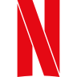
29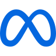
22عمر شرکتها کوتاهتر میشود، اما برندهای مصرفی صدساله هم داریم. تفاوت در توان بازآفرینی است.
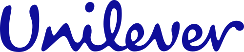
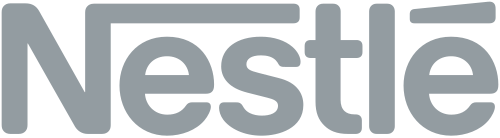
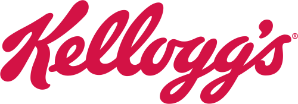
سازمان باید همزمان کسبوکار فعلی را کارآمد اداره کند و کسبوکار آینده را کشف کند.
کارایی، بهبود تدریجی، کیفیت، مقیاس
آزمایش، ریسک، یادگیری، مدلهای جدید
هیچ رفتار ناعادلانهای را در محیط کار نمیپذیرند و برابری، تنوع و شمول را بخشی از فرهنگ سازمانی میخواهند.
غوطهوری دیجیتال آنها غیرقابل مذاکره است.
اصالت بر همه چیز غلبه میکند.
خلاقیت واحد پول آنهاست.
رفاه روانی در اولویت اول است.
برای درگیر شدن، به چیزی واقعی، بیش از حضور فیزیکی یا دیجیتال نیاز دارند.
روحیه کارآفرینی عمیق؛ کار برای یک کارفرما، تنها گزینه نیست.
ذهنیت جهانی جهانبینیشان را شکل میدهد، نه فقط خانواده و مکتب.
نسل آلفا با دستیارهای صوتی و هوش مصنوعی مولد بزرگ میشود؛ برای آنها «پرسیدن از ماشین» به اندازه جستوجو طبیعی است.
تفرقه در نسل دوم
نسل جدیدِ غیرسهامدار
مناسب نسل هزاره و X، اما نامتناسب برای Z و آلفا
خوب یا بد؟
چه کسی محصول ما را بیمصرف میکند؟
آیا واقعاً برند خواهیم ماند؟
سفر دیجیتال سازمان
داده، مهارت و حکمرانی AI
COST OF INACTION
میدانم که اقدام هزینه دارد،
اما… هزینه بیاقدامی چیست؟
هفت حوزهای که هر سازمان ایرانی باید برایشان سناریو داشته باشد.
بهکارگیری تواناییهای ذهنی برای ایجاد یا تبلور یک فکر یا مفهوم جدید؛ برخی آن را ترکیب ایدهها یا ایجاد پیوستگی بین ایدهها تعبیر کردهاند.
فرایند ذهنی کشف ایدهها، یا آمیزش ایدههای موجود، که با بینش خودآگاه یا ناخودآگاه تحریک میشود.
طی کردن راهی تازه، یا پیمودن راهی طیشده به شکلی نوین.
تعریف استاندارد (Runco & Jaeger, 2012): چیزی خلاقانه است که هم نو و اصیل باشد و هم مفید و اثربخش. ایده عجیبِ بیفایده، خلاقیت نیست.
خلاقیت در همپوشانی سه مؤلفه رخ میدهد. روی هر دایره کلیک کنید.
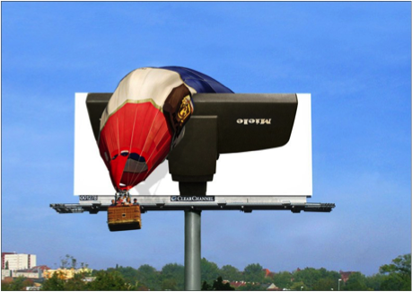
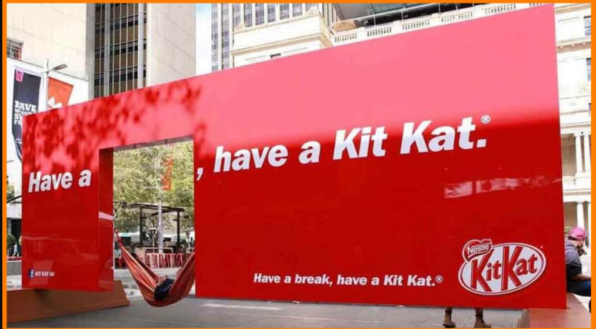
بهکارگیری ایدههای نوینِ ناشی از خلاقیت؛ نوآوری عملی ساختن ایده را ممکن میکند و آن را به صورت محصول یا خدمت تازه ارائه میدهد.
فراگرد ایجاد فکرهای جدید و تبدیل آنها به عمل و کاربردهای سودمند.
بهکارگیری تفکرات جدید در سازمان به صورت کالا، خدمت یا راهحل جدید انجام کارها.
کاربرد ایدههای تازه برای رسیدن به پیشرفتی ارزشمند.
نوآوری، محصول یا فرایندی جدید یا بهبودیافته (یا ترکیبی از آن دو) است که بهطور معناداری با محصولات یا فرایندهای قبلی واحد متفاوت باشد و در اختیار کاربران قرار گرفته (محصول) یا در واحد به کار گرفته شده باشد (فرایند).
هر عامل صفر شود، کل نوآوری صفر است.
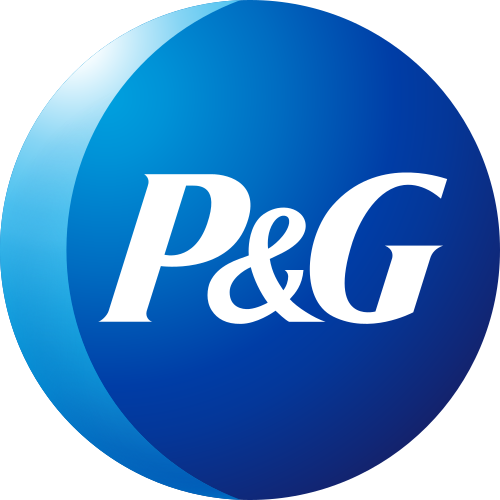
از اوایل دهه ۲۰۰۰ هدف گذاشت بخش بزرگی (حدود نیمی) از نوآوریهایش با مشارکت بیرون از سازمان شکل بگیرد. در ۲۰۲۵ همین شرکت میدان آزمایش «همتیمی سایبرنتیک» با هوش مصنوعی شد.
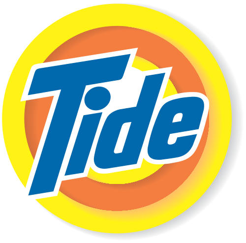
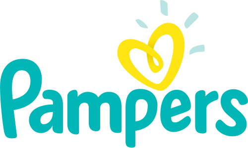
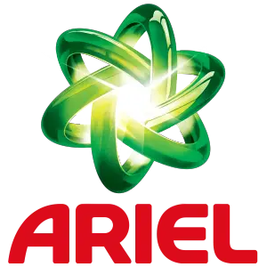
رشد از طریق خرید و سرمایهگذاری در استارتاپها، چالشهای نوآوری جهانی و شبکه همنوآوری با مشتریان و شرکا. «اختراع نکن؛ ادغام کن و مقیاس بده».
مفهوم: Henry Chesbrough, Open Innovation (2003)
طول نوارها نمایانگر رتبه است، نه امتیاز. چین برای اولین بار وارد ده کشور برتر شد (۱۳۹ اقتصاد).
گزارش WEF Global Competitiveness Report (نسخه ۲۰۱۷–۲۰۱۸ در اسلاید اصلی) پس از ۲۰۱۹ متوقف شد؛ امروز GII مرجع اصلی مقایسه نوآوری کشورهاست.
استاندارد سنجش تحقیق و توسعه؛ فعالیتی R&D است که پنج معیار داشته باشد: نو، خلاقانه، دارای عدمقطعیت، نظاممند، و قابل انتقال/تکرار.
مکمل فراسکاتی برای سنجش نوآوری در محصول و فرایند کسبوکار.
قبل از نوآوری باید خلاقیت داشته باشیم. خلاقیت مهارتی است که همه بهطور نسبی دارند و با راهنمایی و آموزش رشد میکند.
گامهای کوتاه رو به جلو؛ مانند سالها تحقیق که به واکسن فلج اطفال رسید.
جهش ناگهانی؛ مانند رابط گرافیکی مکینتاش و امروز هوش مصنوعی مولد.
حاصل خلاقیت فقط محصول فیزیکی نیست: یک فکر، ارتباط میان وقایع، فرایندی کارآمدتر یا خدمتی جدید؛ هرکدام وقتی کامل بیان شود، ارزش دارد.
کلیها میگویند تقسیم آدمها به «خلاق» و «غیرخلاق» افسانه است. بیشتر ما در کودکی خلاق بودهایم و در مسیر، از ترسِ قضاوت، آن را پنهان کردهایم.
از جرقه تا جسارت؛ مسیری که در این کلاس طی میکنیم.
تغییر نگاه به خود
غلبه بر ترس از قضاوت
ابزارهای تولید ایده
سوگیری به سمت عمل
آلبرت بندورا افرادی را که از مار وحشت داشتند، با گامهای کوچک و هدایتشده در چند ساعت به لمس مار رساند. همین منطق برای ترس از ایده دادن کار میکند.
چهار ترسی که کلیها جلوی خلاقیت میبینند.
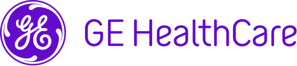
طراح دستگاه MRI دید کودکان از دستگاهش وحشت دارند و بسیاری باید آرامبخش بگیرند. با همدلی، اتاق MRI را به «ماجراجویی کشتی دزدان دریایی» تبدیل کرد؛ نیاز به آرامبخش بهشدت کاهش یافت. فناوری همان بود؛ تجربه عوض شد.
Human-centered
بهجای جلسه بیشتر، نمونه اولیه بسازید. کمالگرایی دشمن یادگیری است.
بازخورد با I like / I wish: نقد امن و سازنده.
شروع از مرکز و انشعاب سریع؛ داوری را به بعد موکول کنید.
کاربر چه میگوید، فکر میکند، انجام میدهد و حس میکند؟
Dream / Gripe: گلایهها را به «چگونه میتوانیم…؟» تبدیل کنید.
چیزی بسازید که بتوان همین امروز به یک مشتری نشان داد.
سرچشمه تمام نیروهای انسان تفکر است؛ با این حال هرگز ادعا نکردهایم در این پرارزشترین مهارت انسانی کامل شدهایم. باید بهتر بیندیشیم.
کلاه خود را راحت عوض کنید. در سازمانها کلاههای گوناگون وجود دارد: کلاه خلاقیت، کلاه معرفت، کلاه عادت. کلاه تمثیل است؛ در گذشته کلاه نماد نقش اجتماعی بود.
بهجای بحثِ «من در برابر تو»، همه همزمان از یک زاویه نگاه میکنند.
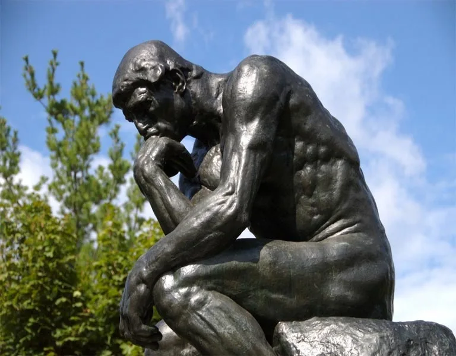
نمیتوان همزمان احساسات، اطلاعات، منطق، امید و خلاقیت را به کار گرفت. شش کلاه این اغتشاش را جداسازی و ترتیببندی میکند.
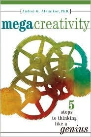
«مگا» یعنی تولید ایده در مقیاس انبوه: نه یک ایده خوب، بلکه هزاران و میلیونها ترکیب. نبوغ فرایندی قابل یادگیری است.
هر «نه» یک ایده را پیش از تولد میکشد.
با افزایش تعداد عوامل، تعداد ترتیبها انفجاری رشد میکند. لغزنده را حرکت دهید.
ترکیبی با 100! ≈ 9.33 × 10157؛ بسیار بیشتر از تعداد اتمهای جهان قابل مشاهده (حدود 1080).
روی هر ویژگی کلیک کنید تا امتیاز خودتان (۱ تا ۵) تغییر کند.
توضیح ویژگی اینجا نمایش داده میشود.
انگیزههایی که از جامعه به فرد القا میشود.
انگیزههایی که از درون شخص منشأ میگیرد؛ قویترین سوخت خلاقیت.
فاکتورهای تعیینکننده دستیابی به تفکر خلاق؛ ابزارهای نوآوری (و امروز: هوش مصنوعی).
کسب نگرش موافق نسبت به ایدههای نوین
حساسیت به مسئله؛ تعریف آن از ابعاد مختلف
آمادگی؛ کسب مواد خام لازم
کاربست سلاست فکر
فعالیت ضمیر ناخودآگاه روی مسئله
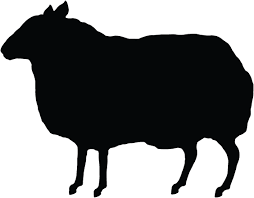
Hegarty on Creativity: There Are No Rules (2014)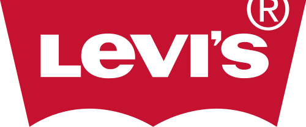
Black Denim, 1982وقتی همه جین آبی تبلیغ میکردند، BBH برای جین مشکی لیوایز گوسفندی سیاه را نشان داد که خلاف جهت گله میرود: «وقتی دنیا زیگ میکند، زاگ کن». این گوسفند نماد آژانس شد.
متفاوت بودن بهخاطر متفاوت بودن نیست؛ برای دیده شدن و معنا ساختن است.
کلیک کنید ↻
خلاقیت شیوه فکر کردنِ کل سازمان است؛ از مالی تا فروش، نه فقط تیم تبلیغات.
کلیک کنید ↻
قواعد برای تکرار موفقیت دیروز ساخته شدهاند؛ خلاقیت یعنی پرسیدن «چرا این قانون؟».
کلیک کنید ↻
مردم داده را فراموش میکنند و داستان را به خاطر میسپارند. ایده را روایت کنید.
کلیک کنید ↻
بریف دقیق و منابع محدود تمرکز میسازد؛ صفحه کاملاً سفید فلجکننده است.
کلیک کنید ↻
الهام از هنر، علم، خیابان و سفر میآید؛ نه از نگاه کردن به رقبا.
کلیک کنید ↻
ویرایش بیرحمانه؛ ایدههای خوب از میان دهها ایده رهاشده بیرون میآیند.
کلیک کنید ↻
هر ایده بزرگ ابتدا ترسناک به نظر میرسد؛ اگر نترساند، احتمالاً تازه نیست.
کلیک کنید ↻
ایدههای نوپا شکنندهاند؛ رهبر خلاق فضای امن برای رشدشان میسازد.
سازمان خلاق نسبت «فکر کردن + انجام دادن» را در هر فرد بالا میبرد؛ نه اینکه عدهای فقط فکر کنند و عدهای فقط اجرا.
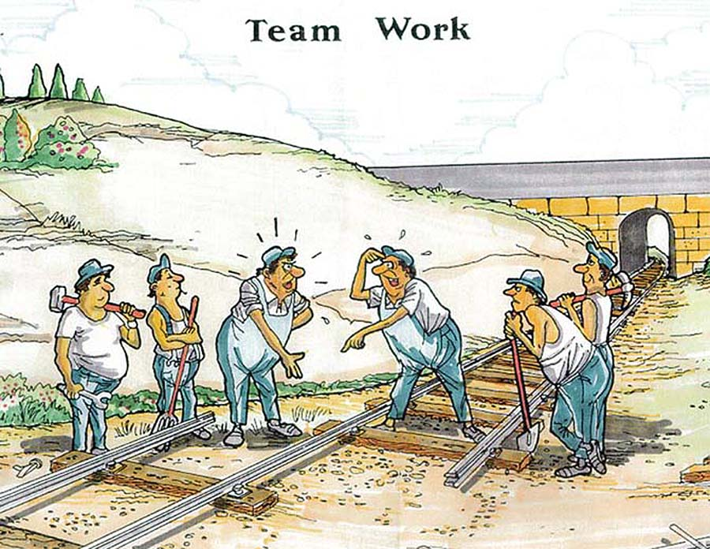
ذهن شهودی موهبتی مقدس است و ذهن منطقی خدمتکاری وفادار. ما جامعهای ساختهایم که خدمتکار را محترم میدارد و موهبت را فراموش کرده است.
این جمله معمولاً به اینشتین نسبت داده میشود، اما منبع مستند آن کتاب The Metaphoric Mind نوشته باب سمپلز (۱۹۷۶) است که آن را در شرح دیدگاه اینشتین آورده است.
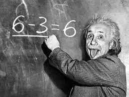
پس از کسب تخصص، تفکر ما قالب میگیرد و به آنچه هست بسنده میکنیم.
بدون دانش نمیدانیم مرز کجاست تا از آن عبور کنیم.
اورویل رایت (نقل به مضمون): «اگر واقعیت را همانگونه میدیدیم که دیگران باور داشتند، امیدی به پیشرفت نداشتیم.» دو دوچرخهساز، نه دانشمندان هوانوردی.
راهحل، رها کردن دانش نیست؛ «فروتنی مطمئن» است: اعتماد به توانایی یادگیری، همراه با شک به دانستههای فعلی. مثل دانشمند فکر کنید، نه مثل واعظ یا دادستان.
آموزش سنتی ما را برای «جواب درست» تربیت کرده است، نه برای «سؤال تازه».
دستهبندی ذهن
قالببندی
سونگری
تکیه بر ذهن منطقی و بیتوجهی به ذهن شهودی
تأخیر در نوآوری
بیتوجهی به افراد خلاقِ فاقد تخصص
گره زدن آنچه میخواهیم با آنچه قبلاً وجود داشته است
ایدهها (نقاط طلایی) با گرانش زیاد به مرکزِ «روال موجود» سقوط میکنند. روی صفحه کلیک کنید تا یک «تازهوارد» ایده بیاورد.
کسانی که مدتها طعم موفقیت را چشیدهاند، کمتر میتوانند تصمیمهای درست بگیرند. انرون، ناسا، نوکیا و کداک بزرگترین مشکلات را پس از رسیدن به موفقیت تجربه کردند.
گویی کسی باید گوشزد کند که اغلب حوادث کوهنوردی در مسیر بازگشت رخ میدهد.
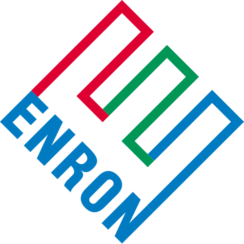
دیدن جهان فقط از دریچه رشته خود
همنوایی به قیمت درستی
«همه همینطور کار میکنند»
سوگیریهای شناختی و پیشفرضها
ایده خوب از سطوح پایین شنیده نمیشود
تصویر قدیمی از مشتری و بازار
شکست آمریکاییها در خلیج خوکها (۱۹۶۱): تیمی از باهوشترین مشاوران طرحی آشکارا ناقص را تأیید کردند و کسی مخالفت نکرد؛ سکوت جان اف. کندی و تیمش.
کدام خط (A، B یا C) هماندازه خط X است؟ قبل از شما شش نفر جواب دادهاند…
دکمه «شروع» را بزنید.
میبینم همه ما در این مورد اتفاق نظر کامل داریم. پس پیشنهاد میکنم تصمیمگیری را به تعویق بیندازیم و به خودمان فرصت بدهیم که اختلاف نظر پیدا شود تا شاید با شناخت کافی درباره موضوع تصمیم بگیریم.
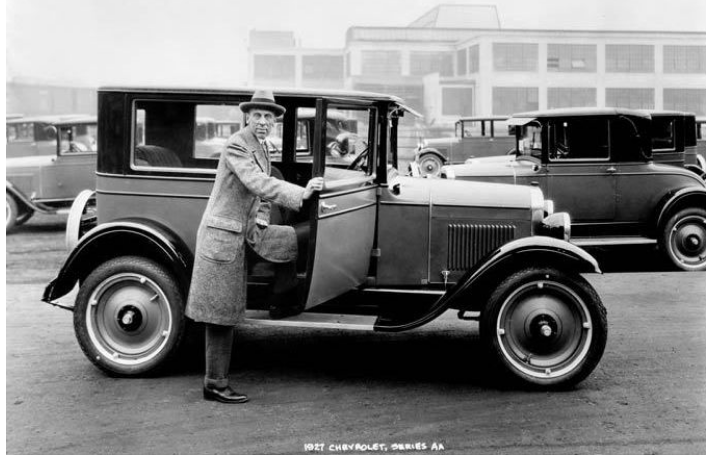
سازمان خلاق اولی را کاهش میدهد و سومی را تشویق میکند.
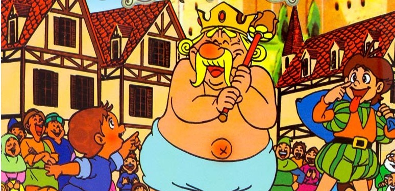
کسی که وارد موقعیت میشود اما ذهنش را درگیرِ پیشفرضها نمیکند، مانند کودک قصه، شرایط را همانگونه که هست میبیند.
در سازمان شما چه کسی نقش «کودک» را دارد؟ و آیا اجازه حرف زدن دارد؟
هر مرحله یک نگرش و یک کنش دارد. روی گلبرگها کلیک کنید.
همه ضرب است، نه جمع: اگر «تغییر» را نبینیم، هیچ نیازی به فرصت تبدیل نمیشود.
هر دروازه: ورودی (مستندات تیم)، معیار (سنجش کیفیت و متغیرهای کلیدی)، خروجی (تصمیم). روی یک خروجی کلیک کنید:
—
بهترین ایدهها معمولاً در انتهای فهرست ظاهر میشوند، نه در ابتدای آن.
آنچه پژوهشهای ۲۰۲۳ تا ۲۰۲۵ درباره خلاقیت انسان و ماشین میگویند.
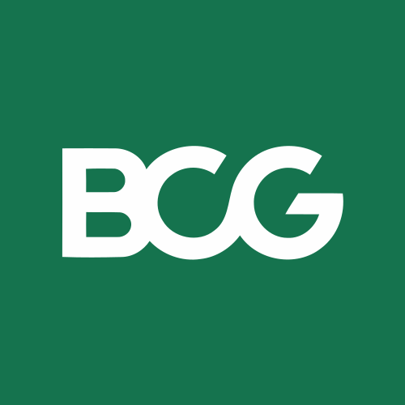
توانایی AI یکنواخت نیست: در برخی کارهای ظاهراً سخت عالی است و در برخی کارهای ظاهراً ساده شکست میخورد. هنر مدیر خلاق، دانستن جای مرز است.
روی نقاط (کارها) کلیک کنید تا ببینید داخل مرز هستند یا بیرون.
داستانهایی که با ایدههای AI نوشته شدند خلاقانهتر ارزیابی شدند (بهویژه برای نویسندگان کمخلاقتر)، اما به هم شبیهتر بودند. هر نقطه یک ایده است.
روی یک نقطه کلیک کنید.
در هر کار فکری آن را امتحان کنید تا مرز ناهموارش را بشناسید.
قضاوت، مسئولیت و بررسی صحت با شماست.
اما بگویید چه فردی باشد: نقش، زمینه و معیار را تعیین کنید.
که تا آخر عمر استفاده میکنید؛ مهارتها را برای فردا بسازید.
برای کسبوکارتان یک سناریوی «قوی سیاه» بنویسید: چه چیزی محصول ما را از رده خارج میکند؟
با شش کلاه و AI، ۲۰ ایده بسازید، ۳ تا را انتخاب و یکی را با یک مشتری واقعی آزمون کنید.
در جلسه بعد، بهجای «نمیشود» بپرسید «چگونه میتوانیم…؟» و یک اختلاف نظر سازنده بسازید.
هزینه اقدام را میدانیم؛ هزینه بیاقدامی را چه کسی میپردازد؟
Books
Kelley, T. & Kelley, D. (2013). Creative Confidence. Crown.
Hegarty, J. (2014). Hegarty on Creativity: There Are No Rules. Thames & Hudson.
de Bono, E. (1985). Six Thinking Hats. Little, Brown.
Aleinikov, A. (2002). MegaCreativity: 5 Steps to Thinking Like a Genius.
Seelig, T. (2015). Insight Out. HarperOne.
Keeley, L. et al. (2013). Ten Types of Innovation. Wiley.
Utley, J. & Klebahn, P. (2022). Ideaflow. Portfolio.
Rubin, R. (2023). The Creative Act: A Way of Being. Penguin.
Edmondson, A. (2023). Right Kind of Wrong. Atria.
Grant, A. (2021). Think Again; (2023). Hidden Potential. Viking.
Mollick, E. (2024). Co-Intelligence. Portfolio.
O'Reilly, C. & Tushman, M. (2021). Lead and Disrupt (2nd ed.).
Csikszentmihalyi, M. (1990). Flow. Harper & Row.
Research & Reports
Doshi, A. & Hauser, O. (2024). Generative AI enhances individual creativity but reduces collective diversity. Science Advances.
Dell'Acqua, F. et al. (2023). Navigating the Jagged Technological Frontier. HBS WP 24-013.
Dell'Acqua, F. et al. (2025). The Cybernetic Teammate. HBS WP 25-043.
Noy, S. & Zhang, W. (2023). Productivity effects of generative AI. Science.
Girotra, K. et al. (2023). Ideas are Dimes a Dozen: LLMs for Idea Generation.
Meincke, L., Nave, G. & Terwiesch, C. (2024). ChatGPT and idea diversity.
Guzik, E. et al. (2023). The originality of machines. J. of Creativity.
WIPO (2025). Global Innovation Index 2025.
OECD/Eurostat (2018). Oslo Manual; OECD (2015). Frascati Manual.
Bennett, N. & Lemoine, G.J. (2014). What VUCA really means for you. HBR.
Cascio, J. (2020). Facing the Age of Chaos (BANI).
Innosight (2018). Corporate Longevity Forecast.
Amabile, T. (1998). How to Kill Creativity. HBR.
Runco, M. & Jaeger, G. (2012). The Standard Definition of Creativity.
Voros, J. (2003). A generic foresight process framework. Inayatullah, S. (2008). Six pillars.
Janis, I. (1972). Victims of Groupthink. Asch, S. (1951/1956).
Cooper, R.G. (1990, 2016). Stage-Gate; Agile–Stage-Gate hybrids.